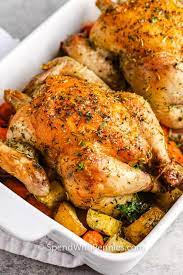

Cornish Hen Recipe

Description
This Cornish hen recipe is simple and adds a little zest to your Cornish hens.
Ingredients
- 4 Cornish game hens
- 2 limes, halved
- 2 teaspoons olive oil
- ¼ teaspoon chili powder
- ¼ teaspoon ground cumin
- kosher salt and ground black pepper to taste
Steps
- Preheat the oven to 425 degrees F (220 degrees C).
- Rub each hen with a lime half. Drizzle with olive oil, then season with chili powder, cumin, kosher salt, and black pepper. Place hens on a rack in a shallow roasting pan.
- Roast hens in the preheated oven for 15 minutes.
- Reduce oven temperature to 350 degrees F (175 degrees C).
- Continue roasting until no longer pink at the bone and the juices run clear,
about 30 minutes. An instant-read thermometer inserted into the thickest part
of the thigh, near the bone, should read 165 degrees F (74 degrees C).
Remove from the oven, cover with a doubled sheet of aluminum foil,
and allow to rest in a warm area for 10 minutes before slicing.